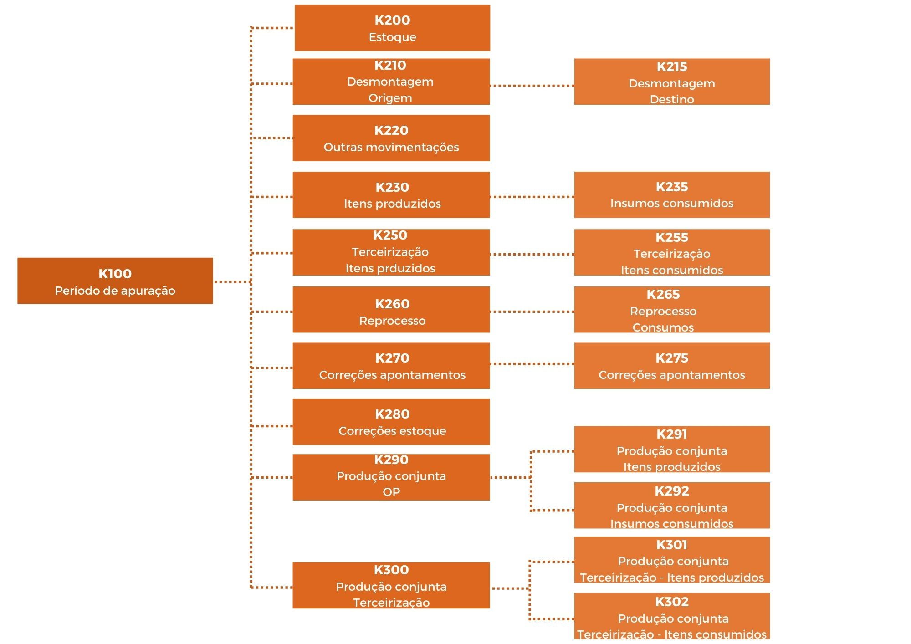

Texto alterado em 06/10/2022.
O Bloco K nada mais é do que a digitalização do Livro de Registro da Produção e do Estoque gerados pelas empresas através de um dos blocos do SPED Fiscal à Receita Federal. Os contribuintes deverão declarar mensalmente as informações relacionadas às entradas e saídas à produção, assim como às especificações das quantidades referentes aos estoques de produtos próprios e de terceiros, consumo de matéria prima, insumos, saldos e perdas ocorridas durante todo o processo de produção.
Essa obrigatoriedade é instituída no SPED EFD ICMS IPI através do Ato COTEPE nº 52/2013.
| Blocos | Descrição |
|---|---|
| 0 | Abertura, Identificação e Referências |
| C | Documentos Fiscais I - Mercadorias (ICMS/IPI) |
| D | Documentos Fiscais II - Serviços (ICMS) |
| E | Apuração do ICMS e do IPI |
| G | Controle do Crédito de ICMS do Ativo Permanente - CIAP |
| H | Inventário Físico |
| K | Controle da Produção e do Estoque |
| 1 | Outras Informações |
| 9 | Controle e Encerramento do Arquivo Digital |
Para o fisco o principal objetivo é promover agilidade no acesso e cruzamento das informações a fim de combater e evitar fraudes durante o processo produtivo nas indústrias.
Já para as empresas o Bloco K traz benefícios para aquelas que querem crescer de maneira estruturada, pois ajudará a fechar os seus ciclos completos de operações, abrangendo toda a movimentação do estoque desde a aquisição da matéria-prima até a elaboração do produto. Com isso, elas terão acesso a informações mais detalhadas sobre a sua produção e saberão os custos do todo o processo produtivo.
A obrigatoriedade se aplica aos estabelecimentos industriais ou a eles equiparados pela legislação federal e pelos atacadistas, podendo, a critério do Fisco, ser exigido para estabelecimentos de contribuintes de outros setores.
A obrigatoriedade da escrituração do Livro de Registro da Produção e do Estoque no SPED EFD ICMS IPI será mensal e poderá ser enquadrado em situações diferentes de acordo com o seu CNAE e faturamento, conforme o cronograma a seguir:
| Início da obrigatoriedade | Escrituração | CNAE |
|---|---|---|
|
01/01/2017 (Faturamento de 2015) Obrigatoriedade do Bloco K para os estabelecimentos industriais pertencentes a empresa com faturamento anual igual ou superior a R$ 300.000.000,00. Restrita à informação dos saldos de estoques escriturados nos Registros K200 e K280, para os estabelecimentos industriais classificados nas divisões 10 a 32 da Classificação Nacional de Atividades Econômicas (CNAE). |
Escrituração Registros K200 e K280 | Divisões de 10 a 32 |
|
01/01/2019 (Faturamento de 2017) Obrigatoriedade do Bloco K para os estabelecimentos industriais pertencentes a empresa com faturamento anual igual ou superior a R$ 300.000.000,00. Correspondente à escrituração completa do Bloco K, com possibilidade de entrega pelo leiaute simplificado para os estabelecimentos industriais classificados nas divisões 11 (Fabricação de bebidas) e 12 (Fabricação de produtos de fumo) e nos grupos 291 (Fabricação de automóveis, camionetes e utilitários), 292 (Fabricação de caminhões e ônibus) e 293 (Fabricação de cabines, carrocerias e reboques para veículos automotores) da CNAE. |
Escrituração Completa do Bloco K, com possibilidade de entrega pelo leiaute simplificado | Divisões do 11 e 12 e Grupos 291, 292 e 293 |
|
01/01/2020 (Faturamento de 2018) Obrigatoriedade do Bloco K para os estabelecimentos industriais pertencentes a empresa com faturamento anual igual ou superior a R$ 300.000.000,00. Correspondente à escrituração completa do Bloco K, com possibilidade de entrega pelo leiaute simplificado para os estabelecimentos industriais classificados nas divisões 27 (Fabricação de máquinas, aparelhos e materiais elétricos) e 30 (Fabricação de outros equipamentos de transporte, exceto veículos automotores) da CNAE; |
Escrituração Completa do Bloco K, com possibilidade de entrega pelo leiaute simplificado | Divisões do 27 e 30 |
|
01/01/2023 (Faturamento de 2020) Obrigatoriedade do Bloco K para os estabelecimentos industriais pertencentes a empresa com faturamento anual igual ou superior a R$ 300.000.000,00. Correspondente à escrituração completa do Bloco K, com possibilidade de entrega pelo leiaute simplificado para os estabelecimentos industriais classificados na divisão 23 (Fabricação de produtos de minerais não metálicos) e nos grupos 294 (Fabricação de peças e acessórios para veículos automotores) e 295 (Recondicionamento e recuperação de motores para veículos automotores) da CNAE. |
Escrituração Completa do Bloco K, com possibilidade de entrega pelo leiaute simplificado | Divisões do 23 e Grupos 294 e 295 |
|
01/01/2024 (Faturamento de 2020) Obrigatoriedade do Bloco K para os estabelecimentos industriais pertencentes a empresa com faturamento anual igual ou superior a R$ 300.000.000,00. Correspondente à escrituração completa do Bloco K, com possibilidade de entrega pelo leiaute simplificado para os estabelecimentos industriais classificados nas divisões 13 (Fabricação de produtos têxteis), 14 (Confecção de artigos do vestuário e acessórios), 15 (Preparação de couros e fabricação de artefatos de couro, artigo para viagem e calçados), 16 (Fabricação de produtos de madeira), 17 (Fabricação de celulose, papel e produtos de papel), 18 (Impressão e reprodução de gravações), 22 (Fabricação de produtos de borracha e de material plástico), 26 (Fabricação de equipamentos de informática, produtos eletrônicos e ópticos), 28 (Fabricação de máquinas e equipamentos), 31 (Fabricação de móveis) e 32 (Fabricação de produtos diversos) da CNAE. | Escrituração Completa do Bloco K, com possibilidade de entrega pelo leiaute simplificado | Divisões 13, 14, 15, 16, 17, 18, 22, 26, 28, 31 e 32 |
|
01/01/2025 (Faturamento de 2020) Obrigatoriedade do Bloco K para os estabelecimentos industriais pertencentes a empresa com faturamento anual igual ou superior a R$ 300.000.000,00. Correspondente à escrituração completa do Bloco K, com possibilidade de entrega pelo leiaute simplificado para os estabelecimentos industriais classificados nas divisões, 10 (Fabricação de produtos alimentícios), 19 (Fabricação de coque, de produtos derivados do petróleo e de biocombustíveis), 20 (Fabricação de produtos químicos), 21 (Fabricação de produtos farmoquímicos e farmacêuticos), 24 (Metalurgia) e 25 (Fabricação de produtos de metal, exceto máquinas e equipamentos) |
Escrituração Completa do Bloco K, com possibilidade de entrega pelo leiaute simplificado | Divisões 10, 19, 20, 21, 24 e 25 |
| Início da obrigatoriedade | Escrituração | CNAE |
|---|---|---|
|
01/01/2018 Restrita à informação dos saldos de estoques escriturados nos Registros K200 e K280, para os estabelecimentos industriais classificados nas divisões 10 a 32 da CNAE pertencentes a empresa com faturamento anual igual ou superior a R$ 78.000.000,00, com escrituração completa, conforme escalonamento a ser definido. |
Escrituração Registros K200 e K280 | Divisões de 10 a 32 |
| Inicio da obrigatoriedade | Escrituração | CNAE |
|---|---|---|
|
01/01/2019 (Faturamento de 2017) Restrita à informação dos saldos de estoques escriturados nos Registros K200 e K280, para os demais estabelecimentos industriais (faturamento anual inferior a R$ 78.000.000,00) classificados nas divisões 10 a 32. |
Escrituração Registros K200 e K280 | Divisões de 10 a 32 |
| Início da obrigatoriedade | Escrituração | CNAE |
|---|---|---|
|
01/01/2019 (Faturamento de 2017) Os estabelecimentos atacadistas classificados nos grupos 462 a 469 da CNAE e os estabelecimentos equiparados a industrial, com escrituração completa conforme escalonamento a ser definido. Conforme previsto pelo Ajuste SINIEF nº 46/2022, os estabelecimentos atacadistas classificados nestes grupos da CNAE poderão, a critério de cada Unidade da Federação, serem autorizados a substituir a entrega dos Registros do bloco K pela apresentação mensal dos saldos dos estoques ao final de cada mês, escriturados nos registros do Bloco H (Registro de Inventário). Veja subtópico 1.2.1 deste texto. b) Sem prejuízo no disposto na letra "a", e critério de cada unidade federada, a partir de 1º.01.2023, poderão ser dispensados de informar os saldos de estoques escriturados nos Registros K200 e K280 os estabelecimentos atacadistas classificados nos grupos 462 a 469 da CNAE pertencentes a empresa com faturamento anual inferior a R$ 10.000.000,00 |
Escrituração Registros K200 e K280 | Grupos 462 a 469 e estabelecimentos equiparados a indústria |
Nota I - Equiparado a indústria
Ressalta-se que não há CNAE que identifique um estabelecimento como equiparado a indústria. A equiparação ocorre em virtude das situações descritas no artigo 9º do Regulamento de IPI/2010.
Nota II – Livro de Controle, modelo 3
Na legislação publicada consta ainda uma observação em relação a necessidade da escrituração do livro de controle modelo 3 até que o bloco K seja totalmente implantado.
As empresas que se habilitarem no Recof Sped continuam obrigadas à entrega das informações do Bloco K de forma completa, independentemente de faixas de faturamento, conforme estabelecido pela Instrução Normativa RFB 1.612/2016.
Nota III - Industriais fabricantes de bebidas e de produtos do fumo
O Bloco K utilizado pelos estabelecimentos industriais fabricantes de bebidas e dos fabricantes de produtos do fumo, para apuração do ICMS ou IPI. Para fins de cumprimento da obrigação relativa à escrituração do Livro Registro de Controle da Produção e do Estoque deverá observar os seguintes critérios:
- para fatos ocorridos entre 01/12/2016 e 31/12/2018, a escrituração do Bloco K da EFD fica restrita à informação dos saldos de estoques escriturados nos Registros K200 e K280; e
- para fatos ocorridos a partir de 01/01/2019, a escrituração do Bloco K da EFD deverá ser completa.
No cronograma de obrigatoriedade das informações do Bloco K, há estabelecimentos obrigados à escrituração completa e outros obrigados à escrituração restrita.
Na escrituração completa do Bloco K, os estabelecimentos devem preencher todos os registros do referido bloco, desde que tenha informações a prestar.
Na escrituração restrita, o estabelecimento deve informar os Registros K200 (estoque escriturado) e K280 (correção de apontamento – estoque escriturado). Vale ressaltar que o inciso III do §7º da cláusula terceira do Ajuste SINIEF 02/2009, estabelece que a escrituração completa para esse grupo, será definida mediante escalonamento ainda a ser definido pela Receita Federal.
Os estabelecimentos atacadistas, não fazem qualquer processo de industrialização, portanto, não há fundamento a exigir de tais contribuintes a escrituração completa, já que nunca terão informações a prestar nos demais registros do Bloco K. Já os estabelecimentos equiparados a indústria poderão ter informações a prestar nos demais registros de acordo com a situação que os colocou na condição de equiparados.
Para as empresas classificadas nos demais CNAE’s e optantes pelo simples nacional também não são obrigadas apresentar as obrigações do Bloco K, o mesmo vale para os microempreendedores individuais (MEI).
Ressalta-se que, para as empresas desenquadradas no âmbito estadual e municipal em razão de ter ultrapassado o sublimite previsto para o referido estado, ocorrerá a declaração do Bloco K caso se enquadre nos critérios de obrigatoriedade.
Os estabelecimentos industriais ou a eles equiparados informarão o consumo específico padronizado, perdas normais do processo produtivo e substituição de insumos para todos os produtos fabricados pelo próprio estabelecimento ou por terceiro.
SPED EFD ICMS IPI | Bloco K | Registro da Produção e do Estoque
Listas técnicas dos produtos fabricados pelo próprio estabelecimento ou por terceiros, como o consumo específico padronizado e o percentual das perdas normais do processo produtivo.
Saldo de estoque de produtos classificados nos tipos:
00 – Mercadoria para revenda,
01 – Matéria-Prima,
02 – Embalagem,
03 – Produtos em Processo,
04 – Produto Acabado,
05 – Subproduto,
06 – Produto Intermediário, e
10 – Outros Insumos.
As movimentações internas entre itens do estoque poderão ser reclassificadas em um outro código em função de um cliente a que se destina o produto ou em função de um determinado controle de qualidade.
Apontamentos da produção dos produtos acabados ou em processo por ordens de produção, caso utilizado, são referentes a cada processo realizados pelo próprio estabelecimento.
São os insumos efetivamente consumidos no processo produtivo, vinculados diretamente aos itens produzidos. Também deve ser detalhado por ordens de produção, caso utilizado. Os insumos informados devem estar escriturados na lista técnica do Registro 0210 – Consumo específico padronizado, do item produzido caso não constar deve-se indicar qual dos insumos da ficha técnica está substituindo.
É a quantidade da produção acabada de produto em processo e produto acabado referente processos realizados em outro estabelecimento. Ou seja, os registros de entrada da produção em locais de armazenagem em poder de terceiros.
É a quantidade dos insumos efetivamente consumidos no processo produtivo, vinculados diretamente aos itens produzidos, referente processos realizados em outro estabelecimento. Os insumos informados devem estar previstos na lista técnica do Registro 0210 – Consumo específico padronizado do item produzido, caso não constar deve-se indicar qual dos insumos da fixa técnica se está substituindo.
O Ajuste SINIEF 25/2021, trouxe a simplificação para os estabelecimentos industriais classificados nas divisões 10, 13, 14, 15, 16, 17, 18, 19, 20, 21, 22, 24, 25, 26, 28, 31, 32 e ainda na divisão 23 nos grupos 294 e 295 da CNAE.
Vale ressaltar que o inciso II, continua exigindo a obrigatoriedade da geração e guarda das informações deste bloco, ainda mesmo após a escrituração simplificada entrar em produção, o fisco poderá solicitar a guarda da informação para a escrituração completa na qual poderá ser exigida em procedimentos de fiscalização (de interesse do fisco), ou por força de regimes especiais (de interesse das empresas).
O Ato Cotepe/ICMS nº 21/2022 publicado em março de 2022 divulgou a nova versão 3.0.9 do SPED EFD ICMS IPI trazendo as informações escrituradas na forma simplificada do registro K.
Saiba mais sobre os registros simplificados.
O contribuinte obrigado a entrega do bloco K que deixar de entregar as informações na EFD ICMS IPI, estará sujeito a multas:
- de competência Estadual do domicilio do contribuinte;
- de competência Federal, prevista no RIPI - Decreto 7212/2010, art. 272, art. 453 e art. 592, com a redação do art. 57 da Medida Provisória 2.158-35/2001 e posteriores modificações. Essas normas trazem multas sobre a apresentação extemporânea, falta da informação ou esclarecimentos solicitados, informações inexatas, incompletas ou omitidas.